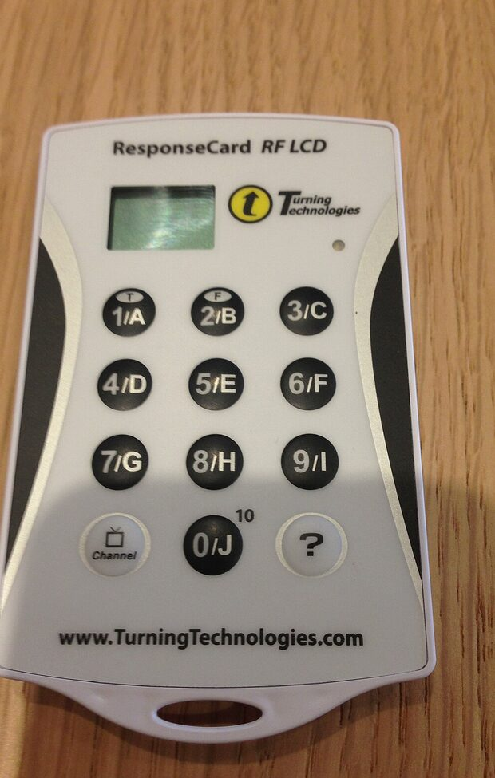
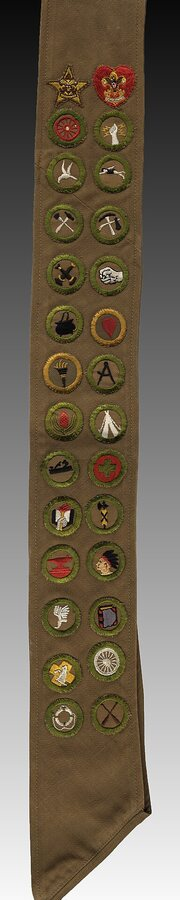
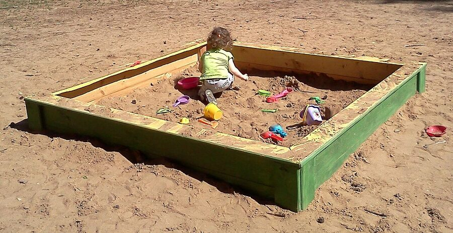
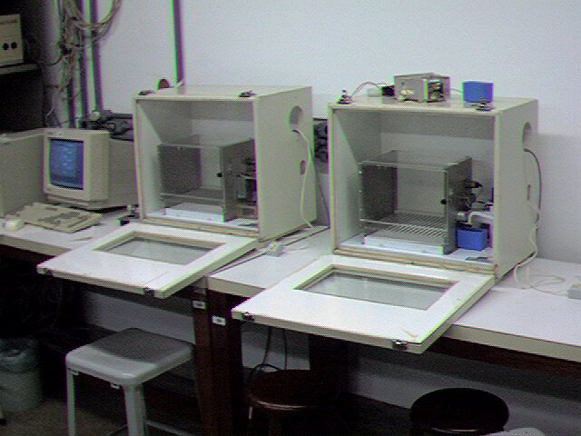

| kind of play | explicit | hidden | null |
|---|---|---|---|
| Progress | ✓ | ✓ | |
| Power | ✓ | ✓ | |
| Identity | ✓ | ✓ | |
| Imaginary | ✓ | ||
| Self | ✓ | ||
| Frivolity | ✓ | ||
| Fate | ✓ |

Caldwell, J. E. (2007). Clickers in the large classroom: Current research and best-practice tips. CBE—Life Sciences Education, 6(1), 9–20. https://doi.org/10.1187/cbe.06-12-0205
Nolan, J., & McBride, M. (2014). Beyond gamification: Reconceptualizing game-based learning in early childhood environments. Information, Communication & Society, 17(5), 594–608. https://doi.org/10.1080/1369118X.2013.808365
Clicker: Editallthearticles. (2014). Handelsüblicherclicker [Photograph]. Wikimedia Commons. CC BY-SA 4.0. Cropped.
Sandbox: Silonov, A. (2013). Sandbox-2013 [Photograph]. Wikimedia Commons. CC BY-SA 4.0. Resized.
Skinner boxes: Dantas, L. (ca. 2001). Skinner boxes 01 [Photograph]. Wikimedia Commons. Public domain.
Merit badge sash: Gerald R. Ford Presidential Library and Museum. (n.d.). Boy Scout sash [Photograph]. Wikimedia Commons. Public domain. Cropped.